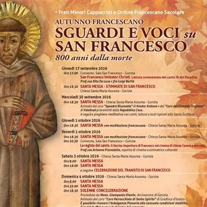

da gio 17 set a mer 18 nov
Autunno Francescano - Sguardi e voci su San Francesco
Dal 17 settembre al 4 novembre, il convento e la chiesa di Santa Maria Assunta dei Cappuccini ospiteranno un programma articolato di appuntamenti che vuole proporre alla città diverse prospettive sulla figura di Francesco, mettendo in dialogo la tradizione francescana con il…
 Indicazioni
Indicazioni
- Costi e prenotazioni
- Costo non indicato · Prenotazione non indicata
- Programma
- Programma da verificare. Apri la fonte ufficiale per orari e possibili aggiornamenti.
- In caso di maltempo
- Nessuna indicazione specifica pubblicata.
- Note
- Acquisito automaticamente dalla fonte.
L’EVENTO
Descrizione completa
Dal 17 settembre al 4 novembre, il convento e la chiesa di Santa Maria Assunta dei Cappuccini ospiteranno un programma articolato di appuntamenti che vuole proporre alla città diverse prospettive sulla figura di Francesco, mettendo in dialogo la tradizione francescana con il linguaggio dell’arte, della cultura e della musica.Un viaggio tra letteratura, cinema, arte, musica, preghiera e storia per tornare a incontrare la figura di san Francesco a 800 anni dalla sua morte.
È questo il filo conduttore dell’Autunno Francescano 2026, promosso dai Frati Minori Cappuccini e dall’Ordine Francescano Secolare di Gorizia, con il titolo “Sguardi e voci su san Francesco”.
In calendario:
giovedì 17 settembre
ore 17.00 - Sala San Francesco, presso la chiesa di Santa Maria Assunta
“San Francesco imitator Christi” - Lettura commentata del Canto XI del Paradiso, con la prof.ssa Rita De Luca e fra Luigi Bertié.
ore 18.30 - chiesa di Santa Maria Assunta
Santa Messa nella memoria delle Stimmate di san Francesco
Il programma entrerà nel vivo nei giorni che precedono la festa del Santo
mercoledì 30 settembre - ore 18.30
chiesa di Santa Maria Assunta
Santa Messa animata da due cori provenienti dalla Repubblica Ceca, la “Squadra Risonante” di Hradec Králové e il “Coro del Ginnasio Stojanov” di Velehrad. La celebrazione sarà seguita da una preghiera meditativa con canti, letture e testi ispirati alla Sacra Scrittura
Le celebrazioni del 1° e 2 ottobre saranno accompagnate da meditazioni francescane
venerdì 2 ottobre - ore 20.30
Sala San Francesco, presso la chiesa di Santa Maria Assunta
“La regista del santo. Il fascino imperituro di Francesco nel cinema di Liliana Cavani e non solo” , un incontro dedicato alla rappresentazione di san Francesco nel cinema, con particolare attenzione all’opera della regista Liliana Cavani. A cura della prof.ssa Arianna Prevedello, esperta di cinema e animatrice culturale
sabato 3 ottobre, vigilia della festa
dopo la Santa Messa delle 18.00 sarà celebrato il tradizionale Transito di san Francesco , memoria del passaggio del Santo dalla vita terrena all’incontro con Dio
domenica 4 ottobre - festa di san Francesco
Oltre alle celebrazioni delle ore 8.00 e delle ore 10.00, alle 18.30 si terrà la solenne concelebrazione presieduta da mons. Giampaolo Dianin, arcivescovo di Gorizia, con l’animazione del Coro Parrocchiale di Santo Spirito di Gradisca d’Isonzo.
Sarà inoltre possibile ricevere l’Indulgenza plenaria alle consuete condizioni stabilite. Al termine della celebrazione è previsto un momento conviviale con buffet nel chiostro del convento
sabato 10 ottobre – ore 18.30
celebrazione animata dal coro gospel “The Colours of Gospel” di Latisana, seguita da una meditazione e da una preghiera sull’esperienza di san Francesco attraverso canti, letture e testi della Sacra Scrittura
domenica 11 ottobre - ore 11.00
“Cammino con Francesco” , un percorso storico-religioso alla scoperta dei luoghi francescani di Gorizia, guidato dal dott. Vanni Feresin
In caso di maltempo l’iniziativa sarà recuperata sabato 17 ottobre alle ore 15.00
domenica 18 ottobre - ore 10.00
Santa Messa cantata accompagnata dall’organo a cura degli studenti di Canto Rinascimentale e Barocco e Organo del Conservatorio “G. Tartini” di Trieste
mercoledì 4 novembre - ore 20.30
Sala Incontro di San Rocco
“San Francesco secondo Giotto. Gli affreschi della Basilica Superiore di Assisi” , incontro affidato al prof. Roberto Filipetti, docente di Iconologia e Iconografia Cristiana.
Tutti gli appuntamenti sono aperti al pubblico
IL PROGRAMMA
Programma e orari
Appuntamenti raccolti dalle fonti elencate. Dove manca un orario, non è ancora disponibile in questa scheda.
Programma pubblicato
- ore 17.00
- ore 18.30
INFORMAZIONI UTILI
Prima di partire
- Controllare la fonte prima di partire.
ORGANIZZAZIONE